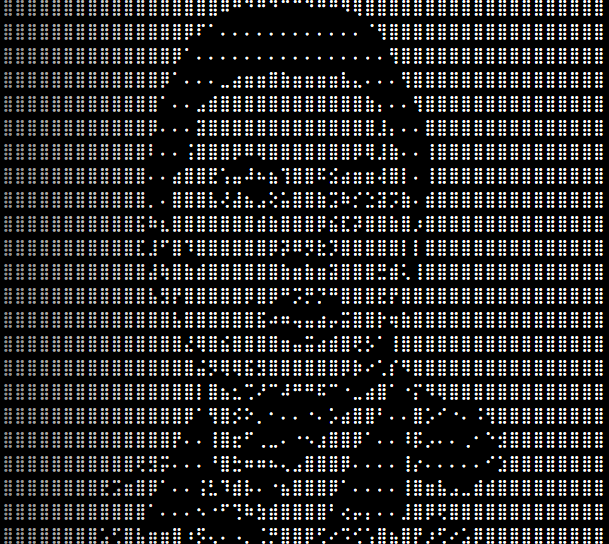

This tool simply convert your image to dot or braille patterns. Just Upload image and convert to text.
You can use any type of images, however black & white or vector images may lead best results.
Tip for mobile users:Set the width to 25 for better fit.
Change the width field to change the size of the dotted text.
Sometimes invert text may give you the more clear results
Here is the example:
